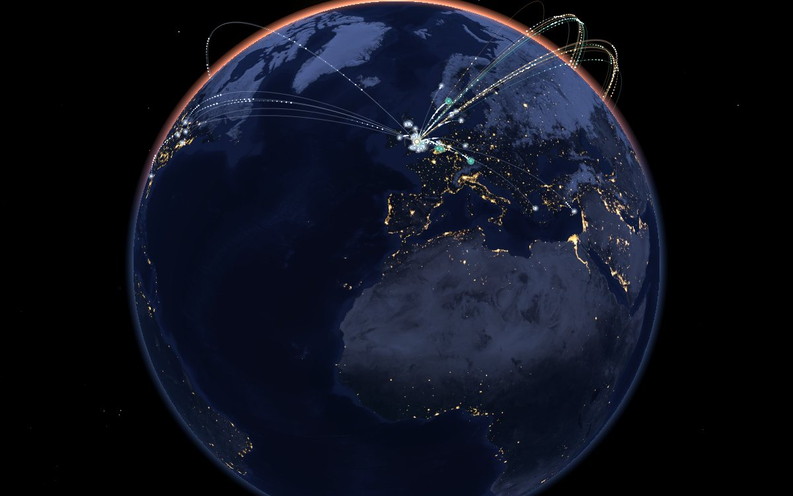

EarthState Twin
One ageing steel structure, in depth: from drawings and inspection data to an auditable digital twin, a capacity assessment and a ranked repair list for an engineer to sign off.
Platforms
Every number comes from a calculation, not from a language model. Every result is logged, traceable to its inputs, and goes to an engineer for sign-off.
One ageing steel structure, in depth: from drawings and inspection data to an auditable digital twin, a capacity assessment and a ranked repair list for an engineer to sign off.
A whole overhead line on real terrain under storm loading, showing tower by tower how close each structure is to failure, and what strengthening would change.
A building or campus as a live 3D twin for operations: events, equipment health, a searchable knowledge base and an AI assistant on every page.
All three are research prototypes. Use them inside our advisory work, licensed to your own team, or in joint research and innovation projects.
The EarthState Twin method is the subject of UK patent application GB2626083.6 (filed 3 November 2026), patent pending.
Core capabilities
Most ageing structures have drawings, and many have sensors. Very few have a model that ties the two together. That is the part we automate.
Advisory
We work with infrastructure owners, engineering consultancies and research partners. Because we build the platforms ourselves, we can show exactly how a result was reached, and change the method when your asset needs it.
Lattice towers, steel structures and bridges, checked against the Eurocodes, with utilisation, remaining margin and a ranked repair list.
Line-level wind studies: which towers come closest to failure in which storms, and which strengthening options buy the most margin.
What AI should and should not decide on a live asset, how to verify it, and how to keep an audit trail an engineer and a regulator can follow.
ISO 19650 information requirements, IFC models, COBie handover and data architecture, so that asset data can feed analysis.
Expert network
Each engagement draws on a network of academics, research partners and senior engineers in the UK, Europe, North America and Asia, covering structural and wind engineering, power-system engineering, sensing and monitoring, BIM and information management, and software and AI development. Experts are brought in per project and named in the scope of the engagement; names are not shown here.
43 academic experts in 38 places6 research partners
Project experience
17 R&D projects11 consulting projects
Projects completed in previous academic and institute posts, shown to illustrate experience.
Demos
The open demos need no sign-in. Demonstration models and data are synthetic, procedurally generated or from open datasets, and are labelled as such on every screen.
 Open · EarthState TwinFunction tourEvery stage of a job, from drawings to the report, with the audit column.
Open · EarthState TwinFunction tourEvery stage of a job, from drawings to the report, with the audit column.
 Open · EarthState TwinAnalysis demoOne synthetic 48 m tower, from drawing tables to member checks.
Open · EarthState TwinAnalysis demoOne synthetic 48 m tower, from drawing tables to member checks.
 Open · 3D LabTower and line in 3DA live twin you can fly through. Best on a laptop or desktop.
Open · 3D LabTower and line in 3DA live twin you can fly through. Best on a laptop or desktop.
 By invitation · FacilityNexusFacility operations twinSign in for authorised testers, or ask us for access.
By invitation · FacilityNexusFacility operations twinSign in for authorised testers, or ask us for access.
 On request · StandfastStorm across a whole lineA demonstration line on real terrain, shown live in a walkthrough.
On request · StandfastStorm across a whole lineA demonstration line on real terrain, shown live in a walkthrough.

Open · NetworkNetwork globeThe resource network and project experience, on an interactive Earth.All demos are research prototypes. Verification cases for the EarthState Twin pass, and independent engineer review of those cases is in progress.
Research partnerships
EarthState builds its own tools, tests them against independent results and publishes. We join universities and companies on research and innovation proposals, co-author papers, and agree how any new patents are shared before the work starts.
Founder
Dr.-Ing. Daguang Han founded EarthState. He is Associate Director of the Transport AI Innovation Centre (TRAICE) at Loughborough University. He has assessed in-service transmission towers and bridges, founded a research institute, and in 2026 led and directed the development of the EarthState Twin and Standfast platforms.